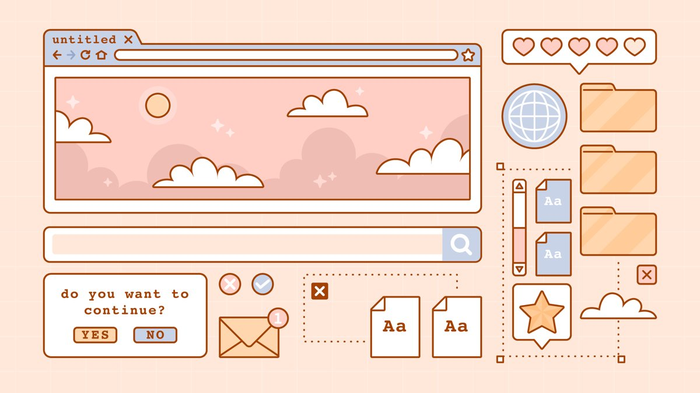
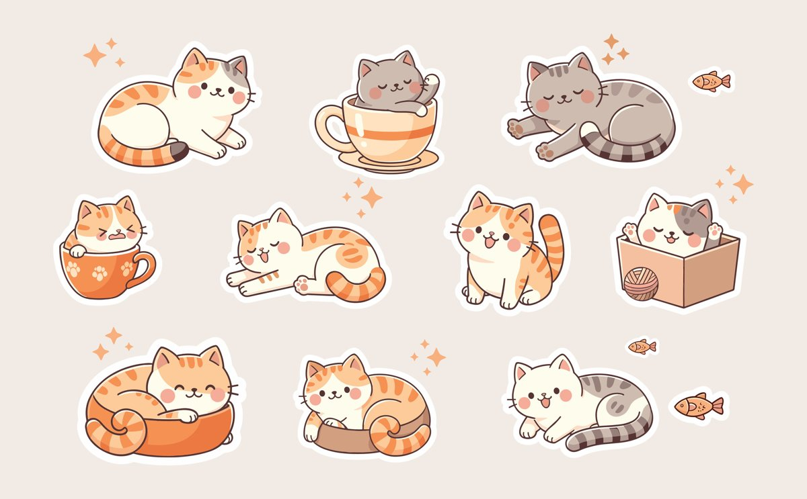
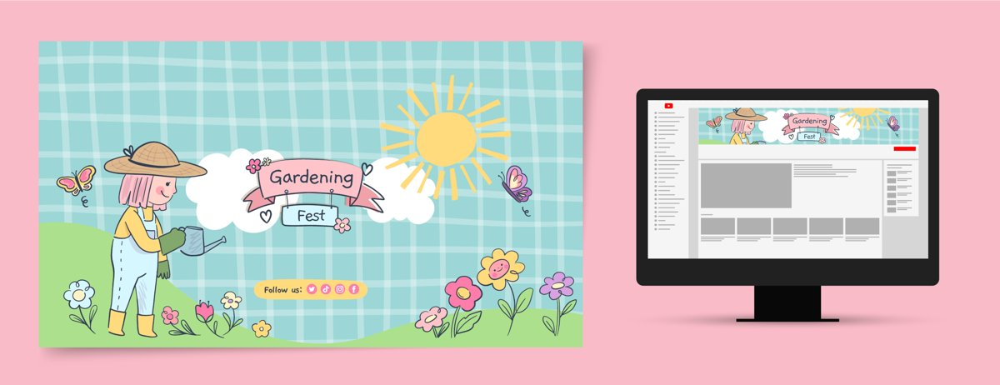
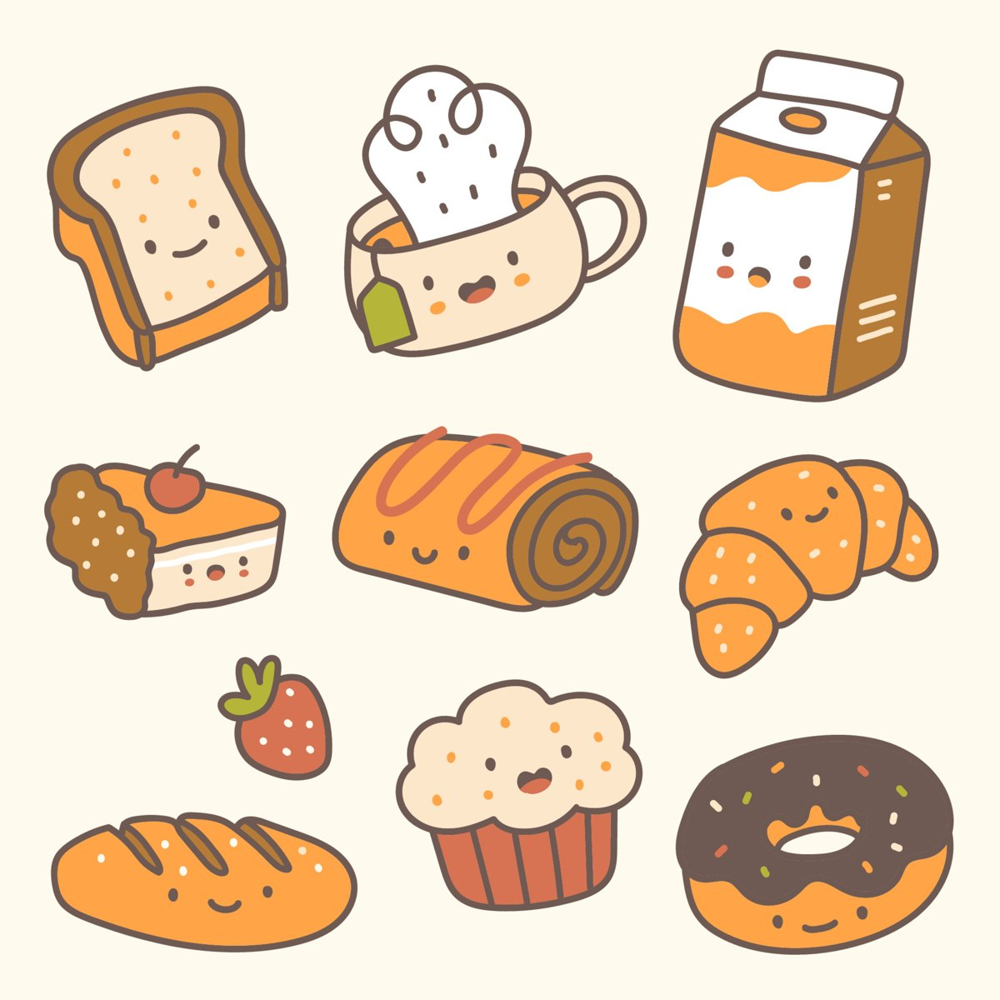
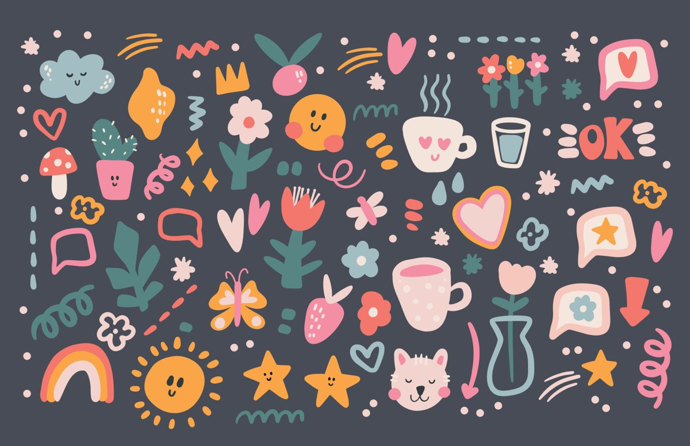
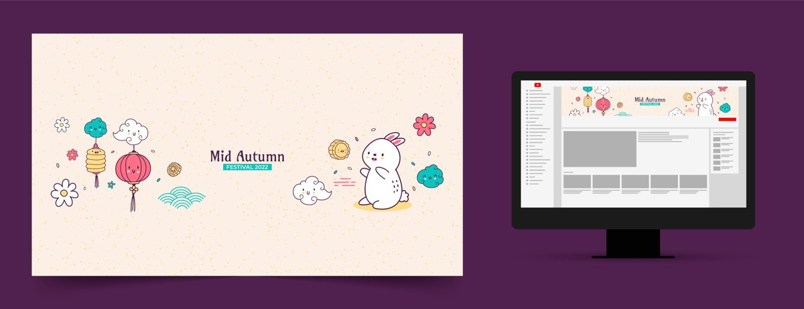

LECȚIA 01Eu și familia mea
わたしと かぞく
Unde locuim și ce facem.
Exemplu
ルーマニアに すんでいます。
Rūmania ni sunde imasu.
Locuiesc în România.
Pas cu pas, cu explicații în română, exemple în japoneză și romaji.
Descoperă lecțiile ♡Despre jurnal

LECȚIA 01わたしと かぞく
Unde locuim și ce facem.
ルーマニアに すんでいます。
Rūmania ni sunde imasu.
Locuiesc în România.

LECȚIA 02しゅみ
Spune ce îți place să faci.
ほんを よむことが すきです。
Hon o yomu koto ga suki desu.
Îmi place să citesc cărți.

Cum spui „pâine” și „prăjitură”?
パン (pan) · pâine
ケーキ (kēki) · prăjitură

Completează cu particula potrivită.
ルーマニア ＿ すんでいます。
に (ni) indică locul unde locuiești.

おまつりが すきですか。
Omatsuri ga suki desu ka?
Îți plac festivalurile?
はい、すきです。
Hai, suki desu.
Da, îmi plac.
Îmi documentez călătoria de învățare a limbii japoneze, de la A2 încolo. Hai să descoperim împreună limba și cultura Japoniei!